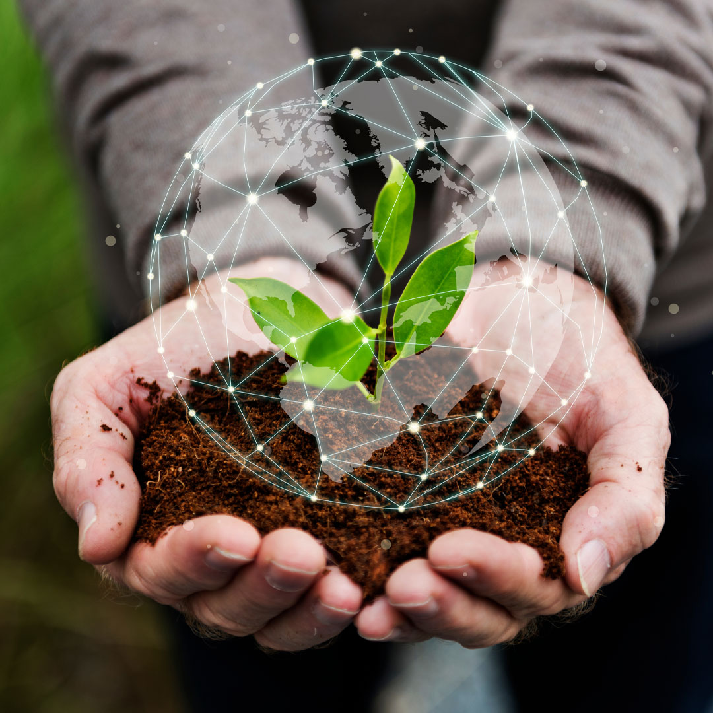
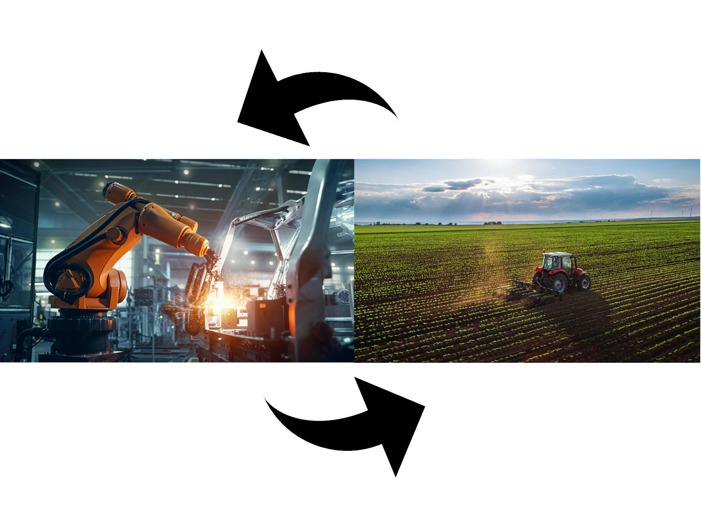

Do campo A cidade
ㅤㅤㅤㅤㅤㅤㅤㅤㅤNos últimos anos, tem se tornado cada vez mais evidente que a interdependência entre áreas rurais e urbanas é crucial para o crescimento econômico e sustentável. As zonas rurais fornecem uma vasta margem de recursos naturais e produtos agrícolas essenciais para a alimentação e o bem-estar das populações urbanas. Por outro lado, as cidades oferecem mercados, infraestrutura e tecnologia que são vitais para o progresso e modernização das áreas rurais, com a tacnologia rural aumentando a velocidade do processo de transição alimentar e das colheitas.
ㅤQuanto mais desenvolvermos essa conexão, mais poderemos crescer e prosperar, aumentando a quantidade de empregos e avançando ainda mais em nossas tecnologias. Cursos como Agronomia, Biologia, Gestão Ambiental, Engenharia Agrícola etc... São de extrema importância para o futuro de todo um ecossistema. Esses cursos formam profissionais capazes de implementar práticas inovadoras e sustentáveis, fundamentais para um desenvolvimento integrado.
ㅤA introdução de inovações tecnológicas no campo tem o potencial de transformar a agricultura tradicional em uma atividade altamente tecnológica. Tecnologias como o uso de drones para o monitoramento de lavouras permitem um acompanhamento preciso da saúde das plantas e da necessidade de irrigação e fertilização, resultando em maior eficiência e produtividade. A aplicação de energias renováveis, como a energia solar e eólica, na agricultura não só reduz os custos operacionais, mas também promove a sustentabilidade ambiental, crucial em tempos de mudanças climáticas.
 ㅤEssas inovações atraem investimentos significativos e geram empregos satisfatórios e de alta qualificação. Além disso, a integração de tecnologia no campo promove a preservação ambiental, uma vez que práticas agrícolas mais eficientes e sustentáveis ajudam a conservar os recursos naturais e reduzir a emissão de gases de efeito estufa.
ㅤEssas inovações atraem investimentos significativos e geram empregos satisfatórios e de alta qualificação. Além disso, a integração de tecnologia no campo promove a preservação ambiental, uma vez que práticas agrícolas mais eficientes e sustentáveis ajudam a conservar os recursos naturais e reduzir a emissão de gases de efeito estufa.
ㅤPortanto, criar oportunidades a partir da integração entre o campo e a cidade é vital para um desenvolvimento equilibrado e sustentável. A interdependência econômica entre essas áreas é fundamental: enquanto o campo fornece alimentos e matérias-primas essenciais, a cidade oferece mercados consumidores, infraestrutura de processamento e distribuição, além de avanços tecnológicos.
ㅤAs políticas públicas desempenham um papel crucial nesse processo. Programas governamentais de incentivo à pesquisa e desenvolvimento agrícola, subsídios para a adoção de tecnologias sustentáveis e a promoção de parcerias público-privadas são essenciais para fortalecer a integração campo-cidade. Incentivos fiscais para empresas que investem em tecnologias verdes e iniciativas de educação continuada para agricultores garantem que o conhecimento e a inovação estejam sempre em evolução.
ㅤA urbanização planejada, que inclui áreas verdes e espaços dedicados à agricultura urbana, também pode contribuir para a sustentabilidade das cidades, melhorando a qualidade de vida e promovendo a segurança alimentar.
ㅤA interdependência entre o campo e a cidade é uma relação proveitosa que sustenta um desenvolvimento econômico equilibrado e sustentável. A inovação tecnológica, aliada a políticas públicas de apoio ao desenvolvimento rural e urbano, cria um ecossistema dinâmico e resiliente, pronto para enfrentar os desafios do futuro e aproveitar as oportunidades emergentes.
ㅤA relação entre campo e cidade é uma via de mão dupla onde ambas as áreas se beneficiam mutuamente. Ao fomentar essa conexão, estamos plantando as sementes para um futuro mais sustentável e próspero. O desenvolvimento econômico e tecnológico só será pleno quando entendermos e valorizarmos essa interdependência, colhendo, assim, as oportunidades que surgem dessa rica interação.
ㅤExplorar e fortalecer a relação entre campo e cidade é essencial para enfrentar os desafios do futuro, garantindo que as gerações vindouras possam desfrutar de um mundo mais equilibrado e repleto de oportunidades. Junte-se a nós nessa jornada de integração e desenvolvimento, colhendo os frutos de um trabalho conjunto entre o rural e o urbano.
ㅤPara mais informações por ponto de vistas diferentes podem dar uma olhada na redação abaixo feita para o agrinho por Mariana Zimpel:
ㅤA relação entre o campo e a cidade é fundamental para o desenvolvimento sustentável e o equilíbrio de uma nação. A ligação entre esses dois ambientes cria uma série de oportunidades que podem impulsionar a economia, melhorar a qualidade de vida e promover a inovação. Fortalecer essa conexão é essencial para garantir que os benefícios do progresso sejam compartilhados de maneira justa entre as áreas rurais e urbanas. Tendo em vista que, a economia urbana depende diretamente das produções agrícolas. Os alimentos e matérias-primas fornecidos pela agricultura são essenciais para atividades comerciais nas cidades. Investir na modernização e na sustentabilidade do agronegócio, não apenas aumenta a produtividade, mas também gera empregos e renda, tanto no campo quanto na cidade.
ㅤOutrossim, a introdução de inovações tecnológicas no campo, tem o potencial de transformar a agricultura tradicional em uma atividade tecnológica. Tecnologias como, o uso de 'drones' para o monitoramento de lavouras e a aplicação de energias renováveis, para aumentar a sustentabilidade na agricultura. Essas inovações atraem investimentos e geram empregos satisfatórios. A integração de tecnologia no campo também promove preservação ambiental, um benefício de suma importância em tempos com mudanças climáticas catastróficas.
Portanto, criar oportunidades a partir da integração entre o campo e a cidade é vital para o desenvolvimento equilibrado e sustentável. A interdependência econômica, a inovação tecnológica e as políticas públicas de apoio ao desenvolvimento campestre, sustentam essa relação proveitosa. Fortalecer os laços entre o campo e a cidade e garantir o futuro em que o progresso seja compartilhado por todos, facilitando uma sociedade mais justa e proveitosa.